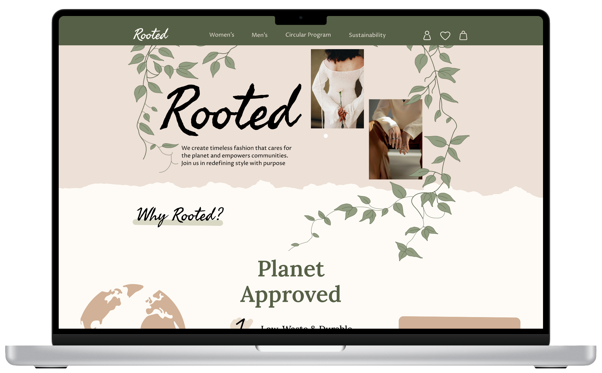
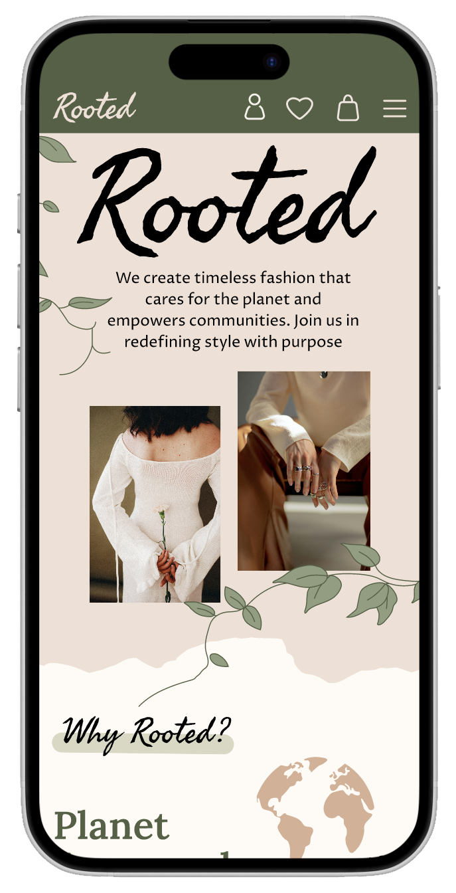
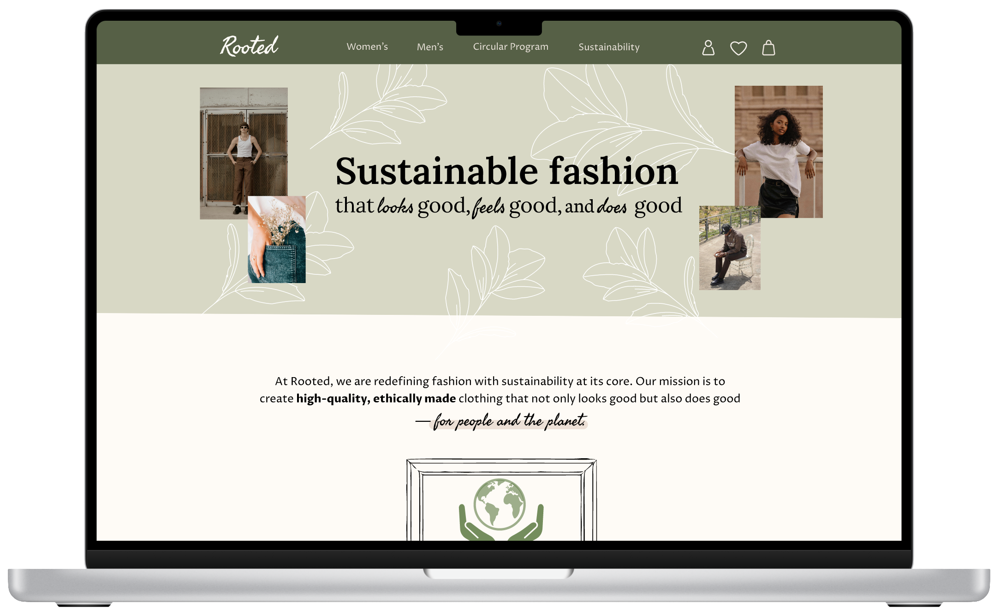
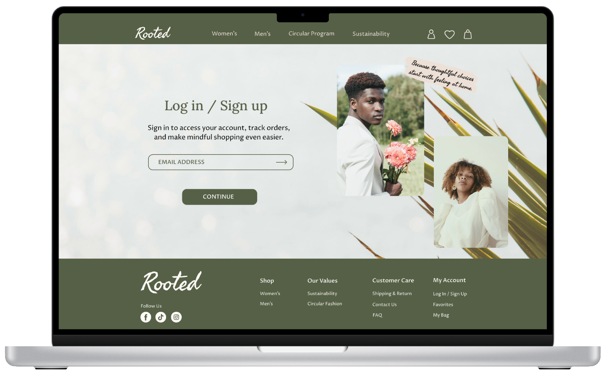
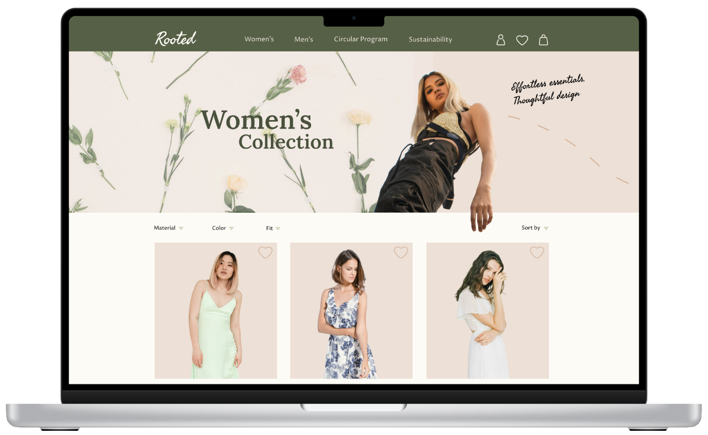

UI/UX Design · Prototype
Rooted is a sustainable clothing brand that fosters mindful consumption and ethical practices.


01 / Overview
This website allows Rooted to showcase its clothing collections, demonstrate its environmentally friendly approach, and make it easy for users to browse through its products.



02 / Design Process
Earthy greens and warm neutrals create a calm visual identity.
Botanical illustrations and layered textures add some visual interest and also reinforce the brand's connection to nature.
Desktop and mobile layouts keep the experience cohesive across different screen sizes.
03 / Explore the Project
Explore the sustainable fashion website prototype.